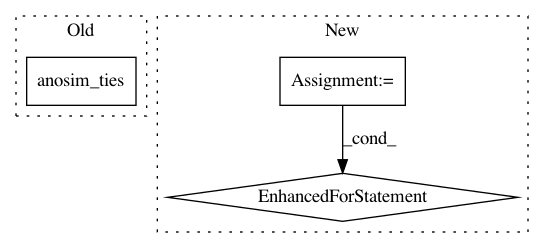

3a1eb421e538d56db4e30b65c38d6221e066aa78,skbio/maths/stats/distance/tests/test_anosim.py,ANOSIMTests,test_call_ties,#ANOSIMTests#,58
Before Change
// object.
for trial in range(2):
np.random.seed(0)
obs = self.anosim_ties()
self.assertEqual(obs.sample_size, 4)
npt.assert_array_equal(obs.groups,
["Control", "Fast"])
self.assertAlmostEqual(obs.statistic, 0.25)
After Change
// Ensure we get the same results if we rerun the method on the same
// object. Also ensure we get the same results if we run the method
// using a grouping vector or a data frame with equivalent groupings.
for inst in self.anosim_ties, self.anosim_ties_df:
for trial in range(2):
np.random.seed(0)
obs = inst()
self.assertEqual(obs.sample_size, 4)
npt.assert_array_equal(obs.groups,
["Control", "Fast"])
self.assertAlmostEqual(obs.statistic, 0.25)
self.assertAlmostEqual(obs.p_value, 0.671)
self.assertEqual(obs.permutations, 999)
def test_call_no_ties(self):
np.random.seed(0)
obs = self.anosim_no_ties()
self.assertEqual(obs.sample_size, 4)
In pattern: SUPERPATTERN
Frequency: 3
Non-data size: 3
Instances
Project Name: biocore/scikit-bio
Commit Name: 3a1eb421e538d56db4e30b65c38d6221e066aa78
Time: 2014-05-11
Author: mcdonadt@colorado.edu
File Name: skbio/maths/stats/distance/tests/test_anosim.py
Class Name: ANOSIMTests
Method Name: test_call_ties
Project Name: biocore/scikit-bio
Commit Name: 310abb13340113253d273c37115701af6038c049
Time: 2014-05-06
Author: jai.rideout@gmail.com
File Name: skbio/maths/stats/distance/tests/test_anosim.py
Class Name: ANOSIMTests
Method Name: test_call_ties
Project Name: biocore/scikit-bio
Commit Name: 3c5e7c346c8bf04dbb78235d9267528949e4141e
Time: 2014-03-03
Author: jai.rideout@gmail.com
File Name: bipy/maths/stats/distance/tests/test_anosim.py
Class Name: ANOSIMTests
Method Name: test_call_ties